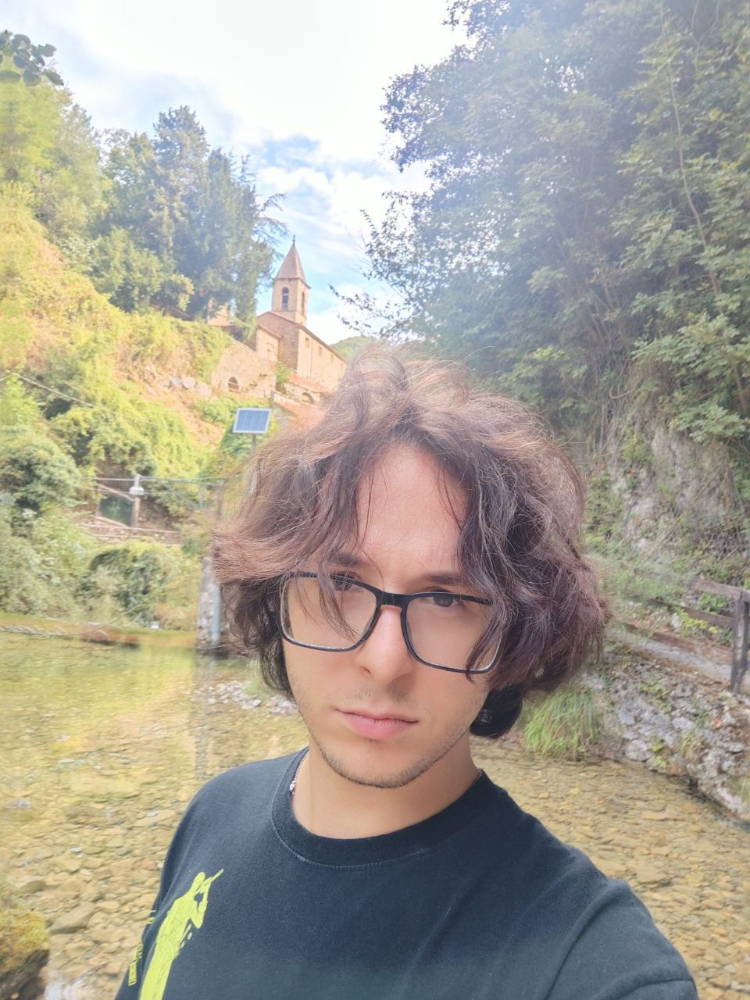

The adventurer
PhD candidate in Computer Science & Engineering, Politecnico di Milano, AIRLab. Advisor: Matteo Matteucci · Visiting PhD, University of Tokyo (2025) · Expected graduation 2026

You find Cristian at AIRLab, Politecnico di Milano, where he is a PhD candidate with Matteo Matteucci. His work lives where images, text and 3D point clouds meet: multimodal representation learning, synthetic data generation, generative latents, compositional reasoning in vision-language models, and image-conditioned 3D diffusion.
In 2025 he spent six months as a visiting PhD at the University of Tokyo, in the Computer Vision and Media Lab of Prof. Toshihiko Yamasaki. When not training models, he plays electric guitar, plays TFT far too seriously, and listens to a great deal of fantasy metal.
Huge construct (point cloud), unaligned
Denoising Breath (Recharge on click). The wyrm assembles itself from pure Gaussian noise, one reverse-diffusion step at a time, as 1,800 points. Click the plate and it draws a new sample.
Tally from Google Scholar. The wyrm is a nod to his image-conditioned 3D diffusion work.
Selected entries, newest first. The full list of 15 is on its own page; see also Google Scholar and ORCID.
Every campaign starts in a home town. Cristian's is Politecnico di Milano, where he earned both degrees with full marks before staying on for the PhD, with one long side quest to Tokyo.